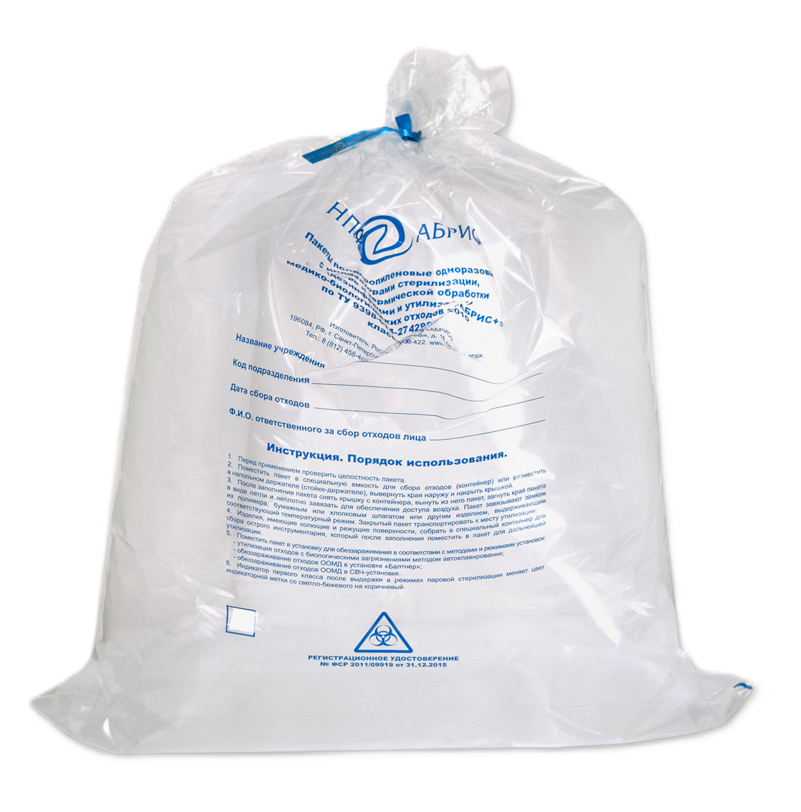

Пакеты полипропиленовые одноразовые с индикаторами стерилизации, для сбора и термической обработки (дезинфекции и утилизации) медико-биологических отходов.
* Вы можете задать вопросы или оформить заказ с помощью нашей формы, через электронную почту или WhatsApp
Email WhatsAppОдноразовые прозрачные пакеты. Предназначены для обеззараживания отходов ЛПУ методами автоклавирования и обработки в СВЧ-поле.
Пакеты изготовлены из термостойкого полипропилена специальной марки и температурой устойчивости до 150 С. Пакеты снабжены индикатором паровой стерилизации 1-класса (индикатор-свидетель). По достижении уровня критических параметров индикаторная полоска меняет свой цвет со светло-бежевого на коричневый цвет.